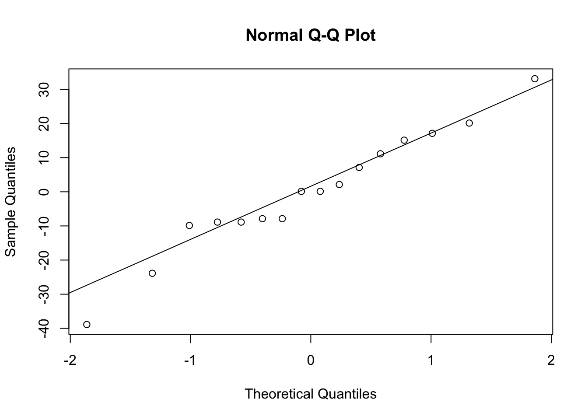

O termo “teste de hipóteses” se refere à utilização de regras para rejeitar ou não uma hipótese estatística com base em elementos de nossas amostras. Consideramos uma hipótese nula que não há diferença entre os elementos observados \(H_0: \theta = \theta_0\). A partir desta hipótese, estabelecemos uma hipótese alternativa. No exemplo temos a hipótese de que há diferenças entre os elementos observados \(H_a:\theta\neq\theta_0\)(Mello & Peternelli, 2013).
Ao se definir as hipóteses, escolhemos um nível de probabilidade para as conclusões ou um nível de significância. Este processo é sujeito a erros, sendo esses chamados de erro tipo I, que é a rejeição de uma \(H_0\) verdadeira, com probabilidade \(\alpha\), ou aceitar uma \(H_0\) falsa, conhecido como erro tipo II, e expresso pela probabilidade \(\beta\)(Tonhasca Jr, 1991). Neste sentido, \(\alpha\) é a significância do teste, ou seja, a probabilidade de se rejeitar a hipótese nula sendo esta verdadeira, enquanto \(1-\beta\) é o poder do teste, ou seja, a probabilidade de se rejeitar a hipótese nula sendo ela falsa (Gotelli & Ellison, 2016; Tonhasca Jr, 1991). Deste modo, temos a seguinte tabela de decisão:
Manter \(H_0\)
Rejeitar \(H_0\)
\(H_0\) verdadeira
Decisão correta (\(1-\alpha\))
Erro tipo I (\(\alpha\))
\(H_0\) falsa
Erro tipo II (\(\beta\))
Decisão correta (\(1 - \beta\))
7.1 Teste-t
7.1.1 Teste-t para a comparação de duas amostras.
Vamos importar o conjunto de dados artropodes, que apresenta a abundância de artrópodes coletados com armadilhas pitfall em um fragmento florestal e na matriz do fragmento.
library(readxl)art <-read_excel("dados_R.xlsx", sheet ="artropodes") #importar dadosstr(art)#estrutura do objeto
Neste conjunto de dados temos uma variável categórica indicando o ambiente me uma variável contínua com a abundância de artrópodes em cada unidade amostral. Utilizamos o operador “~” para criar fórmulas. No exemplo, faremos um gráfico de boxplot comparando os ambientes (Figura 7.1) e um teste-t para comparar se há diferenças entre as médias de abundância artrópodes nos ambientes:
boxplot(abundancia ~ ambiente, data = art) #boxplot: parece haver diferenças entre grupost.test(abundancia ~ ambiente, data = art) #teste-t não pareado
Welch Two Sample t-test
data: abundancia by ambiente
t = -4.4927, df = 12.852, p-value = 0.0006224
alternative hypothesis: true difference in means between group fragmento and group matriz is not equal to 0
95 percent confidence interval:
-60.73835 -21.26165
sample estimates:
mean in group fragmento mean in group matriz
53.875 94.875
Figura 7.1: gráfico de boxplot comparando a abundância de artrópodes em dois ambientes.
pelo resultado, vemos que há diferença significativa entre a média da abundˆancia nos ambientes analizados: t(12.85) = -4,49; p = 0,0006.
7.1.2 Teste-t pareado
No teste t pareado, as amostras são dependentes. Podemos utilizá-lo quando, por exemplo, aplicamos dois tratamentos diferentes em uma mesma amostra e queremos observar se houve diferença entre os tratamentos.
No exemplo, vamos comparar o tamanho corpóreo de galhadores e parasitas que ocorrem em uma mesma espécie de plantas hospedeiras. Para cada hospedeiro, temos o tamanho em milímetros do galhador e do parasita associado (Figura 7.2) e o teste-t não pareado abaixo indicam que as abundâncias são similares. No entanto, observamos nos valores do conjunto de dadosque para cada rio, o número de invertebrados na nascente é maior que o número na foz:
gal <-read_excel("dados_R.xlsx", sheet ="galhadores") # importar os dadosgal #observar os dados
# A tibble: 13 × 3
hospedeiro galhador parasita
<chr> <dbl> <dbl>
1 A 1.44 1.26
2 B 1.34 1.12
3 C 1.31 1.26
4 D 1.78 1.58
5 E 1.33 1.06
6 F 1.98 1.68
7 G 1.86 1.4
8 H 1.8 1.39
9 I 1.87 1.82
10 J 2.26 1.71
11 K 2.15 1.37
12 L 1.27 1.09
13 M 1.86 1.35
boxplot(gal[,2:3]) #observar se há diferença entre os grupost.test(gal$galhador, gal$parasita) #teste-t não pareado
Welch Two Sample t-test
data: gal$galhador and gal$parasita
t = 2.7743, df = 21.885, p-value = 0.0111
alternative hypothesis: true difference in means is not equal to 0
95 percent confidence interval:
0.08071393 0.55928607
sample estimates:
mean of x mean of y
1.711538 1.391538
Figura 7.2: gráfico de boxplot comparando galhadores e parasitas
Como as amostras são pareadas, pois cada observação (cada linha) representa um hospedeiro e o galhador e parasita associado ao mesmo hospedeiro, podemos utilizar o teste-t pareado. Realizamos osso pois os galhadores e parasitas podem ter tamanhos diferentes simplesmente pelos hospedeiros apresentarem condições diferentes que causem diferenças nos tamanhos.
t.test(gal$galhador, gal$parasita, paired =TRUE) # teste t pareado
Paired t-test
data: gal$galhador and gal$parasita
t = 5.4359, df = 12, p-value = 0.0001511
alternative hypothesis: true mean difference is not equal to 0
95 percent confidence interval:
0.1917387 0.4482613
sample estimates:
mean difference
0.32
Neste caso observamos uma diferença significativa entre as médias a uma significância de 5%: t(12) = 5,43, p = 0,00015.
Podemos utilizar um boxplot ligando os pontos entre os valores para cada hospedeiro facilmente utilizando o ggpubr (Figura 7.3):
Figura 7.3: gráfico de boxplot pareado comparando galhadores e parasitas,
Pela visualização dos dados, fica claro que os parasitas são menores que os galhadores associados a um mesmo hospedeiro.
7.1.3 Teste-t para uma média
O teste t para média de uma amostra pode ser utilizado para medir a probabilidade de a média da amostra em questão ter apresentado o valor observado \(\overline{x}\) ou algo mais extremo, dada a média da população \(\mu_{0}\). Sendo assim testamos as seguintes hipóteses:
\(H_{0}: \overline{x} = \mu_{0}\)
\(H_{1}: \overline{x} \neq \mu_{0}\)
7.1.4 Exemplo
Na literatura observamos que indivíduos de uma determinada espécie apresentam 5 cm de comprimento. Ao realizar uma amostragem de 8 indivíduos desta espécie, obtemos os seguintes valores: 2.9, 2.6, 5.8, 3.7, 5.2, 0.1, 5.0 e 5.0. Para testar a afirmação encontrada na literatura, podemos elaborar as seguintes hipóteses:
\(H_{0}: \overline{x} = 5\)
\(H_{1}: \overline{x} \neq 5\)
Testaremos a hipótese nula com nível de significância \(\alpha = 0.05\).
Para obter o valor-t, utilizamos a seguinte fórmula:
\(t=\frac{\bar x-\mu_{0}}{s/\sqrt{n}}\)
Assim, podemos calcular:
val <-c(2.9, 2.6, 5.8, 3.7, 5.2, 0.1, 5.0, 5.0)mean(val) # média
Com os cálculos acima, encontramos o valor-t observado. Precisamos saber se este valor é maior ou igual do que o valor-t limite com significância \(\alpha = 0.05\). Para isso temos que saber os graus de liberdade, que para este teste é calculado como \(gl = n - 1 = 7\).
Podemos discutir isso olhando uma tabela da distribuição t (http://www.ttable.org), ou utilizando a função para quantis da distribuição t qt(). Como a significância é de 5% e o teste é bicaudal, utilizamos o valor de 2.5% para descobrir o valor t alvo:
qt(0.975, df =7)# ou qt(0.025, df = 7, lower.tail = F) - valor para a outra cauda
[1] 2.364624
Como o valor-t obtido não é maior do que o valor-t alvo, falhamos em rejeitar a hipótese nula, assim assumimos que não há diferenças significativas entre a média das observações e a média populacional.
O valor - p para o valor de t obtido pode ser calculado com:
pt(t.val, df =7, lower.tail = T)*2
[1] 0.1111736
O teste realizado anteriormente pode ser reproduzido utilizando a função t.test:
t.test(val, # valoresmu =5, # média da populaçãoalternative ="two.sided") # teste bicaudal
One Sample t-test
data: val
t = -1.8224, df = 7, p-value = 0.1112
alternative hypothesis: true mean is not equal to 5
95 percent confidence interval:
2.214258 5.360742
sample estimates:
mean of x
3.7875
Neste caso a média da amostra (3.7875) não foi significativamente diferente (p > 0.05) da média da população (\(\mu\) = 5): t(7) = -1.8224, p = 0.1112
7.1.5 Teste unilateral vs teste bilateral
O teste t pode ser usado para testar se o valor difere da média (teste bilateral), ou se ele é maior (ou menor) que esta média. Neste caso dizemos que este teste é unilateral (ou one-sided). Se testarmos a hipótese alternativa de que a média de uma amostra é maior que a média da população, elaboramos as seguintes hipóteses:
\(H_{0}: \overline{x} \leq \mu_{0}\)
\(H_{1}: \overline{x} > \mu_{0}\)
Na Figura 7.4, podemos visualizar graficamente o que é a significância (\(\alpha\)), o valor t alvo, o valor t observado e o valor p em um teste bilateral e unilateral:
Figura 7.4: Representação gráfica da interpretação de um teste de hipótese (teste t) bilateral e unilateral
Vamos testar a hipótese de que a média da amostra (val) é MENOR que a média da população:
t.test(val, mu =5, alternative ="less")
One Sample t-test
data: val
t = -1.8224, df = 7, p-value = 0.05559
alternative hypothesis: true mean is less than 5
95 percent confidence interval:
-Inf 5.048009
sample estimates:
mean of x
3.7875
Neste caso, observamos que a média da amostra (3.7875) é menor do que a média da população (\(\mu\) = 5), entretanto a diferença não é significativa (p > 0.05): t(7) = -1.82, p = 0.056
7.1.6 Premissas do teste-t
Dados coletados seguem uma escala contínua ou ordinal.
Dados amostrados aleatoriamente e amostra é representativa da população.
Os dados apresentam distribuição normal.
Tamanho amostral suficientemente grande.
Homogeneidade de variâncias.
7.1.7 Avaliando as premissas do teste-t
Podmeos aplicar diversosmétodos para avaliar se os dados não violam as premissas para o teste-t dentre as principais premissas temos:
7.1.7.1 Normalidade
O teste-t assume a premissa de normalidade dos resíduos. Isso pode ser avaliado de maneira visual utilizando gráficos quantil-quantil, que comparam os quantis observados com os quantis teóricos para a distribuição normal (Figura 7.5):
qqnorm(residuals(lm(abundancia~ambiente, data = art))) #gráfico quantil-quantilqqline(residuals(lm(abundancia~ambiente, data = art))) #adicionar linha de tendência

Figura 7.5: gráfico quantil-quantil para avaliar os pressupostos de normalidade.
O observação de linearidade dos pontos em relação à reta sugere que os dados sejam normalmente distribuídos.
Obs: no próximo capítulo iremos ver em mais detalhes a utilização da função lm() para ajustar modelos lineares.
Existem diferentes testes que podem ser utilizados para verificar normalidade. Um exemplo é o teste de Shapiro-Wilk:
shapiro.test(residuals(lm(abundancia~ambiente, data = art)))
Shapiro-Wilk normality test
data: residuals(lm(abundancia ~ ambiente, data = art))
W = 0.97236, p-value = 0.8753
O teste indicou que não há diferença significativa entre a distribuição dos dados e uma distribuição normal a uma significância de 5% (p > 0.05).
Embora muitas vezes utilizados, os testes de normalidade tendem a ser sensíveis ao tamanho amostral, assim a análise visual e compreensão das distribuições teóricas que podem ter gerado os dados são mais indicados na hora de escolher o teste. Além disso, o teste-t se mostra robusto a desvios à normalidade (Tsagris & Pandis, 2021).
7.1.7.2 Homogeneidade de variâncias
O teste-t tradicional assume que as variâncias das amostras sejam iguais. Isso pode ser testado utilizando a função var.test:
var.test(abundancia ~ ambiente, data = art)
F test to compare two variances
data: abundancia by ambiente
F = 0.53976, num df = 7, denom df = 7, p-value = 0.4346
alternative hypothesis: true ratio of variances is not equal to 1
95 percent confidence interval:
0.1080626 2.6960678
sample estimates:
ratio of variances
0.5397631
De acordo com o teste, a razão entre as variâncias não difere significativamente de 1, ou seja, as variâncias não diferem significativamente.
A função t.test pode ser utilizada para realizar o teste-t clássico (var.equal = TRUE) ou o teste-t de Welch, que ajusta os graus de liberdade quando as variâncias não são iguais, e deve ser usado nesse caso (var.equal = FALSE):
t.test(abundancia ~ ambiente, data = art) #teste-t de Welch
Welch Two Sample t-test
data: abundancia by ambiente
t = -4.4927, df = 12.852, p-value = 0.0006224
alternative hypothesis: true difference in means between group fragmento and group matriz is not equal to 0
95 percent confidence interval:
-60.73835 -21.26165
sample estimates:
mean in group fragmento mean in group matriz
53.875 94.875
t.test(abundancia ~ ambiente, data = art, var.equal =TRUE) # teste-t tradicional
Two Sample t-test
data: abundancia by ambiente
t = -4.4927, df = 14, p-value = 0.0005062
alternative hypothesis: true difference in means between group fragmento and group matriz is not equal to 0
95 percent confidence interval:
-60.57301 -21.42699
sample estimates:
mean in group fragmento mean in group matriz
53.875 94.875
7.1.8 Testes não-paramétricos
Quando os dados violam os pressupostos de normalidade, muitas vezes é sugerida a utilização de testes não paramétricos (entretanto veja Tsagris & Pandis, 2021). Um exemplo de teste não-paramétrico alternativo ao teste-t para duas amostras é o teste de Mann-Whitney:
wilcox.test(abundancia ~ ambiente, data = art)
Warning in wilcox.test.default(x = DATA[[1L]], y = DATA[[2L]], ...): cannot
compute exact p-value with ties
Wilcoxon rank sum test with continuity correction
data: abundancia by ambiente
W = 3.5, p-value = 0.00323
alternative hypothesis: true location shift is not equal to 0
No caso de dados pareados, temos o teste de Wilcoxon, que também pode ser feito utilizando a função wilcox.test:
Warning in wilcox.test.default(gal$galhador, gal$parasita, paired = TRUE):
cannot compute exact p-value with ties
Wilcoxon signed rank test with continuity correction
data: gal$galhador and gal$parasita
V = 91, p-value = 0.001651
alternative hypothesis: true location shift is not equal to 0
7.2 Teste de qui-quadrado
O teste de qui-quadrado (\(X^2\)) é utilizado para comparar frequências observadas a frequências esperadas. O teste de qui-quadrado é considerado um teste não paramétrico, pois ele não depende da estimativa de parâmetros populacionais (média e variância).
7.2.1 Teste de aderência/concordância
Neste tipo de teste, observamos o quanto que um modelo probabilístico se adequa aos dados observados
Podemos usar como exemplo o experimento de Mendel. O cruzamento entre heterozigotos de ervilhas lisas amarelas (YyRr x YyRr) teve o seguinte resultado. De acordo com as leis de Mendel, obteríamos as seguintes proporções esperadas para as ervilhas amarelas lisas: verdes lisas: amarelas rugosas: verdes rugosas - 9:3:3:1
Podemos calcular o \(X^2\) utilizando a função chisq.test():
prop <- ervilhas$Prop_esp/sum(ervilhas$Prop_esp) #cálculo da probabilidade esperada de obter cada valor : (9, 3, 3, 1)/16prop
[1] 0.5625 0.1875 0.1875 0.0625
chisq.test(ervilhas$Freq_obs, p = prop) # teste de qui-quadrado
Chi-squared test for given probabilities
data: ervilhas$Freq_obs
X-squared = 0.40126, df = 3, p-value = 0.94
Com este teste, podemos observar que a frequência observada não é significativamente diferente da frequência observada.
7.2.2 Teste de independência/contingência
O teste de qui-quadrado pode ser usado para testar a independência entre duas variáveis medidas nas mesmas unidades de um experimento.
Exemplo: Ao realizar um experimento para testar se uma espécie de aranhas se abriga mais debaixo das pedras durante momentos de mais ou menos luz, foi analisado o tipo de ambiente que os animais foram encontrados (coberto ou aberto) durante o dia ou durante a noite. com isso, pode-se construir a seguinte tabela de contingência:
Para observar graficamente a quantidade de indivíduos em cada um dos conjuntos, podemos criar um gráfico em mosaico (Figura 7.6):
mosaicplot(aranhas, main =NULL ,ylab ="Ambiente", xlab ="Luminosidade")
Figura 7.6: gráfico em mosaico para dados de aranhas
Vamos realizar o teste de independência entre as duas variáveis:
chisq.test(aranhas)
Pearson's Chi-squared test with Yates' continuity correction
data: aranhas
X-squared = 8.0081, df = 1, p-value = 0.004657
Sendo assim, rejeitamos a hipótese de independência entre as variáveis. Ou seja, quando está escura, as aranhas preferem o ambiente aberto, e quando está claro, elas preferem o ambiente fechado.
7.3 Conclusão
Neste capítulo, exploramos os fundamentos dos testes de hipóteses, com foco no teste-t e no teste de qui-quadrado. Aprendemos a aplicar o teste-t para comparar médias de amostras independentes e pareadas, além de testar a média de uma amostra em relação a um valor teórico. Também discutimos as premissas do teste-t, como normalidade e homogeneidade de variâncias, e como avaliá-las utilizando gráficos e testes estatísticos. Para situações em que as premissas não são atendidas, foram apresentados testes não paramétricos, como o teste de Mann-Whitney e o teste de Wilcoxon. Por fim, exploramos o teste de qui-quadrado para avaliar a aderência de frequências observadas a valores esperados e testar a independência entre variáveis categóricas.
Gotelli, N. J., & Ellison, A. M. (2016). Princípios de estatística em ecologia. Artmed.
Mello, M. P., & Peternelli, L. A. (2013). Conhecendo o R: uma visão mais que estatística. Editora UFV.
Tsagris, M., & Pandis, N. (2021). Normality test: Is it really necessary? American Journal of Orthodontics and Dentofacial Orthopedics, 159(4), 548–549. https://doi.org/10.1016/j.ajodo.2021.01.003